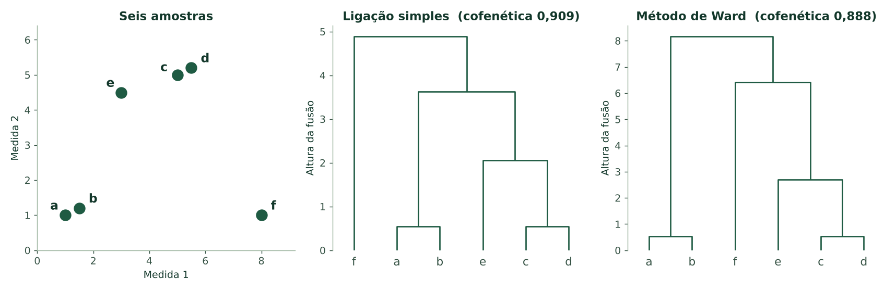
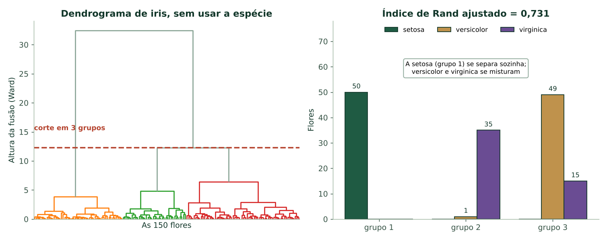

Agrupamento hierárquico
Constrói uma hierarquia de fusões sucessivas entre observações, resumida em um dendrograma que o analista corta onde julgar adequado.
Comece por aqui
O agrupamento hierárquico constrói uma árvore de fusões sucessivas: começa com cada observação em seu próprio grupo e, a cada passo, junta os dois grupos mais próximos, até que todos estejam em um só. O resultado não é uma partição, mas uma hierarquia de partições — e a escolha de onde cortá-la é uma decisão do analista, não do algoritmo.
O algoritmo é determinístico, mas o resultado depende de quatro escolhas do analista: qual distância usar, qual critério de ligação, padronizar ou não as variáveis, e onde cortar a árvore. Nesta ficha cada uma delas é exibida com os números que produz, porque as quatro mudam a resposta — em iris, padronizar reduz o índice de Rand ajustado de 0,731 para 0,615.
O que é o método
Partindo de \(n\) grupos unitários, o método aglomerativo repete \(n-1\) vezes o mesmo passo: encontrar o par de grupos com a menor distância entre si e fundi-lo. O que distingue os critérios de ligação é apenas a definição de distância entre grupos, a partir das distâncias entre pontos.

A altura de um nó do dendrograma é a distância entre os dois grupos no momento da fusão. Fusões baixas juntam coisas parecidas; uma fusão muito mais alta que as anteriores indica que o algoritmo foi obrigado a juntar grupos realmente diferentes — e é por isso que o maior salto nas alturas é a pista usual para escolher onde cortar.
Pressupostos e como verificá-los
O agrupamento hierárquico não é um teste de hipóteses e não tem pressupostos distribucionais. Tem, em troca, um conjunto de requisitos práticos que determinam se o resultado significará algo.
| Requisito | Por que importa | Como verificar |
|---|---|---|
| Distância adequada ao tipo de dado | Euclidiana supõe variáveis numéricas comparáveis. | Para dados mistos, use a distância de Gower; para binários, Jaccard. |
| Escalas comparáveis | Variáveis de maior amplitude dominam a distância. | Compare desvios-padrão e amplitudes; decida sobre padronizar. |
| Ausência de observações atípicas extremas | Um ponto distante pode formar um grupo unitário. | Examine as distâncias máximas e as últimas fusões. |
| Estrutura de grupos compatível com o critério | Ward favorece grupos esféricos de tamanho similar. | Compare vários critérios; use a silhueta. |
| Dendrograma fiel às distâncias | Se não for, a árvore engana. | Correlação cofenética: acima de 0,8 é satisfatório. |
| Número de observações manejável | A matriz de distâncias é O(n²). | Com n acima de alguns milhares, prefira k-médias. |
Quando as variáveis estão em unidades diferentes, padronizar é obrigatório — do contrário a variável medida em unidades maiores domina. Quando estão na mesma unidade, padronizar pode custar informação, porque iguala o peso de uma variável discriminante e de uma irrelevante. Em iris, as quatro medidas estão em centímetros, e o comprimento da pétala (DP = 1,765 cm) separa as espécies muito melhor que a largura da sépala (DP = 0,436 cm). Padronizar iguala as duas e derruba o Rand ajustado de 0,731 para 0,615.
Formulação e cálculo
Não há hipótese nula a testar: o método é descritivo. A formulação é algorítmica, e o que se calcula é a sequência de fusões, as alturas correspondentes e as medidas de qualidade.
A fórmula de recorrência de Lance–Williams
Todos os critérios de ligação usuais são casos particulares de uma única recorrência, que é o que permite implementá-los em um só algoritmo. Quando os grupos \(G\) e \(H\) se fundem, a distância do novo grupo a um terceiro grupo \(K\) é
| Critério | α_G | α_H | β | γ |
|---|---|---|---|---|
| Simples | 1/2 | 1/2 | 0 | −1/2 |
| Completa | 1/2 | 1/2 | 0 | +1/2 |
| Média (UPGMA) | |G|/(|G|+|H|) | |H|/(|G|+|H|) | 0 | 0 |
| Centroide | |G|/(|G|+|H|) | |H|/(|G|+|H|) | −|G||H|/(|G|+|H|)² | 0 |
| Ward | (|G|+|K|)/(|G|+|H|+|K|) | (|H|+|K|)/(|G|+|H|+|K|) | −|K|/(|G|+|H|+|K|) | 0 |
Em que:
- \(d_{ij}\)
- distância entre as observações \(i\) e \(j\)
- \(D(G,H)\)
- distância entre os grupos \(G\) e \(H\)
- \(|G|\)
- número de observações no grupo \(G\)
- \(\bar x_G\)
- vetor de médias do grupo \(G\)
- \(\alpha,\beta,\gamma\)
- coeficientes que definem o critério de ligação
Exemplo numérico, passo a passo
| Amostra | x₁ | x₂ |
|---|---|---|
| a | 1,0 | 1,0 |
| b | 1,5 | 1,2 |
| c | 5,0 | 5,0 |
| d | 5,5 | 5,2 |
| e | 3,0 | 4,5 |
| f | 8,0 | 1,0 |
A menor distância da matriz é \(d_{ab}=\sqrt{0{,}5^2+0{,}2^2}=0{,}5385\), e \(d_{cd}\) tem exatamente o mesmo valor. Os dois primeiros passos são, portanto, (a,b) e (c,d), em qualquer critério.
No terceiro passo, a ligação simples calcula \[\begin{aligned}&D(\{e\},\{c,d\}) \\ &= \min(2{,}0616;\,2{,}5962) \\ &= 2{,}0616,\end{aligned}\] que é menor que \(D(\{a,b\},\{c,d\})=5{,}1662\) e que \(D(\{f\},\cdot)\). Funde-se então e ao bloco (c,d), à altura 2,0616.
| Passo | Fusão | Simples | Completa | Média | Ward |
|---|---|---|---|---|---|
| 1 | (a,b) | 0,5385 | 0,5385 | 0,5385 | 0,5385 |
| 2 | (c,d) | 0,5385 | 0,5385 | 0,5385 | 0,5385 |
| 3 | e com (c,d) | 2,0616 | 2,5962 | 2,3289 | 2,6889 |
| 4 | — | 3,6249 | 6,1033 | 5,0486 | 6,4179 |
| 5 | — | 4,8877 | 7,0000 | 5,8988 | 8,1644 |
Note que no quarto passo os critérios divergem: a simples e a média fundem (a,b) ao bloco (c,d,e), enquanto a completa e Ward fundem f a esse bloco. O ponto f, isolado à direita, é tratado de modo diferente conforme o critério considere o vizinho mais próximo ou o mais distante.
| Critério | Correlação |
|---|---|
| Simples | 0,9095 |
| Completa | 0,9027 |
| Média | 0,9263 |
| Ward | 0,8882 |
Propriedades
- A ligação simples e a completa dependem apenas da ordem das distâncias, não dos seus valores: qualquer transformação monótona da matriz produz o mesmo dendrograma.
- A ligação simples é equivalente à árvore geradora mínima do grafo de distâncias, o que explica a sua tendência ao encadeamento.
- A ligação simples e a completa não sofrem inversões no dendrograma; o método do centroide pode sofrer.
- Ward minimiza, em cada passo, o aumento da soma de quadrados intragrupos — o mesmo objetivo que o k-médias otimiza globalmente.
- O método é determinístico e aninhado: uma fusão feita nunca é desfeita, de modo que um erro inicial se propaga.
- O custo é \(O(n^2)\) em memória e ao menos \(O(n^2\log n)\) em tempo, o que limita o método a alguns milhares de observações.
Como interpretar os resultados
| Elemento | O que informa | Cuidado |
|---|---|---|
| Dendrograma | A hierarquia completa de fusões. | A ordem horizontal dos ramos é arbitrária. |
| Alturas de fusão | Quão diferentes eram os grupos fundidos. | O maior salto sugere onde cortar. |
| Correlação cofenética | Fidelidade da árvore às distâncias. | Acima de 0,8 é satisfatório. |
| Silhueta | Qualidade da separação por observação. | Valores negativos indicam má alocação. |
| Tamanhos dos grupos | Se o corte produziu grupos úteis. | Grupos unitários sugerem observações atípicas. |
| Perfis médios por grupo | O que distingue cada grupo. | É aqui que o resultado ganha significado. |
O algoritmo devolve um dendrograma mesmo quando não há nenhuma estrutura de grupos nos dados — aplicado a pontos uniformemente distribuídos, ele produz uma árvore de aparência perfeitamente respeitável. A existência do dendrograma não é evidência de que haja grupos. Isso se verifica com a estatística de lacuna, a silhueta, ou simplesmente comparando com dados aleatórios de mesma dimensão e escala.
Como executar no R e em Python
Onde executar o código em Python
Não é preciso instalar nada: o Google Colab é um computador na nuvem, gratuito, que executa Python pelo navegador e já traz as bibliotecas usadas aqui (numpy, scipy e matplotlib).
O fluxo básico são três funções do pacote stats: dist() para a matriz de distâncias, hclust() para a árvore e cutree() para extrair a partição. Use method = "ward.D2", que implementa o critério de Ward corretamente sobre distâncias euclidianas ("ward.D" é mantido por compatibilidade histórica e espera distâncias ao quadrado). Para avaliar, cophenetic() e cluster::silhouette(); para os gráficos, factoextra::fviz_dend() e dendextend.
d <- dist(scale(dados))
h <- hclust(d, method = "ward.D2")
g <- cutree(h, k = 3)
cor(d, cophenetic(h)) # fidelidade do dendrograma
Exemplo de aplicação
Contexto dos dados
A aplicação usa iris, as 150 flores medidas por Anderson e analisadas por Fisher, já empregadas nas fichas de MANOVA e k-médias. O ponto importante do delineamento: a espécie não entra no agrupamento. Ela é revelada apenas no final, para medir o quanto a estrutura descoberta pelo algoritmo corresponde à estrutura biológica. A ficha fecha com uma demonstração do efeito de encadeamento da ligação simples, em dados fictícios construídos para esse fim.
Código em R
# Agrupamento hierárquico: exemplo completo ----
# Pacotes: stats (base), cluster, factoextra, dendextend
# install.packages(c("cluster", "factoextra", "dendextend"))
# PARTE 1 - seis amostras, duas medidas: a mecânica do algoritmo
X <- matrix(c(1.0,1.0, 1.5,1.2, 5.0,5.0, 5.5,5.2, 3.0,4.5, 8.0,1.0),
ncol = 2, byrow = TRUE,
dimnames = list(letters[1:6], c("x1", "x2")))
X
d <- dist(X) # distâncias euclidianas
round(as.matrix(d), 3)
# Os quatro critérios de ligação
hs <- hclust(d, method = "single")
hc <- hclust(d, method = "complete")
ha <- hclust(d, method = "average")
hw <- hclust(d, method = "ward.D2")
# A sequência de fusões: merge e height contam a história
cbind(hs$merge, altura = round(hs$height, 4))
cbind(hw$merge, altura = round(hw$height, 4))
# Fidelidade do dendrograma: correlação cofenética
sapply(list(single = hs, complete = hc, average = ha, ward = hw),
function(h) cor(d, cophenetic(h)))
par(mfrow = c(2, 2))
plot(hs, main = "ligação simples", xlab = "", sub = "")
plot(hc, main = "ligação completa", xlab = "", sub = "")
plot(ha, main = "ligação média", xlab = "", sub = "")
plot(hw, main = "Ward", xlab = "", sub = "")
par(mfrow = c(1, 1))
# PARTE 2 - iris: 150 flores, quatro medidas. A espécie NÃO entra no
# agrupamento; ela só serve para avaliar o resultado no final.
data(iris)
Z <- scale(iris[, 1:4]) # padronizado
dZ <- dist(Z); dO <- dist(iris[, 1:4])
apply(iris[, 1:4], 2, function(v) c(media = mean(v), dp = sd(v), ampl = diff(range(v))))
hw_o <- hclust(dO, method = "ward.D2")
hw_z <- hclust(dZ, method = "ward.D2")
g_o <- cutree(hw_o, k = 3)
g_z <- cutree(hw_z, k = 3)
table(iris$Species, g_o)
table(iris$Species, g_z)
# Índice de Rand ajustado: concordância com a espécie, corrigida pelo acaso
library(mclust) # ou fossil::adj.rand.index
adjustedRandIndex(iris$Species, g_o)
adjustedRandIndex(iris$Species, g_z)
# Onde cortar? As últimas alturas de fusão e o maior salto
tail(hw_z$height, 10)
plot(rev(tail(hw_z$height, 10)), type = "b", pch = 19,
xlab = "Número de grupos", ylab = "Altura da fusão")
library(factoextra)
fviz_dend(hw_z, k = 3, rect = TRUE)
fviz_nbclust(Z, FUN = hcut, method = "silhouette")
# Silhueta do agrupamento escolhido
library(cluster)
sil <- silhouette(g_z, dZ)
summary(sil)
plot(sil)
# PARTE 3 - por que a ligação simples costuma falhar: o encadeamento
# Dois blocos separados com uma ponte de pontos entre eles (dados fictícios).
set.seed(42)
A <- cbind(rnorm(30, 0, 0.6), rnorm(30, 0, 0.6))
B <- cbind(rnorm(30, 10, 0.6), rnorm(30, 0, 0.6))
P <- cbind(seq(2.2, 7.8, length.out = 22), rnorm(22, 0, 0.12))
Y <- rbind(A, B, P)
dy <- dist(Y)
sapply(c("single", "complete", "average", "ward.D2"), function(m) {
h <- hclust(dy, method = m)
c(table(cutree(h, 2)), razao = h$height[length(h$height)] /
h$height[length(h$height) - 1])
})
# Comparar dois dendrogramas lado a lado
library(dendextend)
tanglegram(as.dendrogram(hclust(dy, "single")),
as.dendrogram(hclust(dy, "ward.D2")))
A mesma análise em Python, com os resultados
Cole o código em um notebook do Google Colab ↗ e execute com Shift+Enter. Os valores abaixo são a saída desse código.
# Bibliotecas: numpy, scipy, matplotlib e scikit-learn (todas já no Google Colab)
import numpy as np
from scipy.cluster import hierarchy
from scipy.spatial.distance import pdist, squareform
from scipy import stats
from sklearn.datasets import load_iris
# ===================================================================
# PARTE 1 - a mecânica, com seis pontos
# Dados fictícios: seis amostras, duas medidas cada.
P = np.array([[1.0, 1.0], [1.5, 1.2], [5.0, 5.0], [5.5, 5.2], [3.0, 4.5], [8.0, 1.0]])
rot = ["a", "b", "c", "d", "e", "f"]
print("Seis amostras, duas medidas")
for r, p in zip(rot, P):
print(f" {r}: ({p[0]:.1f}; {p[1]:.1f})")
D = squareform(pdist(P))
print("\nMatriz de distâncias euclidianas")
print(" " + "".join(f"{r:>8}" for r in rot))
for i, r in enumerate(rot):
print(f" {r} " + "".join(f"{D[i,j]:8.3f}" for j in range(6)))
print("\nFusões sucessivas, por três critérios de ligação")
for metodo, nome in [("single", "ligação simples (vizinho mais próximo)"),
("complete", "ligação completa (vizinho mais distante)"),
("average", "ligação média (UPGMA)"),
("ward", "método de Ward (mínima variância)")]:
Z = hierarchy.linkage(pdist(P), method=metodo)
print(f"\n{nome}")
print(f"{'passo':>6}{'funde':>16}{'distância':>12}{'tamanho':>9}")
nomes = {i: rot[i] for i in range(6)}
for k_, (i, j, d, t) in enumerate(Z, start=1):
novo = "(" + nomes[int(i)] + "," + nomes[int(j)] + ")"
nomes[5 + k_] = novo
print(f"{k_:6d}{novo:>16}{d:12.4f}{int(t):9d}")
coph = hierarchy.cophenet(Z, pdist(P))[0]
print(f" correlação cofenética = {coph:.4f}")
print("\nA correlação cofenética mede o quanto o dendrograma preserva as distâncias")
print("originais. Valores acima de 0,8 indicam uma representação fiel.")
# ===================================================================
# PARTE 2 - aplicação: iris, sem usar a espécie
print("\n" + "=" * 70)
print("iris: 150 flores, quatro medidas. O agrupamento NÃO usa a espécie;")
print("ela só é revelada no final, para avaliar o resultado.")
d = load_iris(); X = d.data; esp = d.target
especies = ["setosa", "versicolor", "virginica"]
print(f"\nEscalas das quatro variáveis (a padronização importa):")
for j, nm in enumerate(d.feature_names):
print(f" {nm:<22} média = {X[:,j].mean():6.3f} DP = {X[:,j].std(ddof=1):6.3f} "
f"amplitude = {np.ptp(X[:,j]):5.2f}")
Z_pad = (X - X.mean(0))/X.std(0, ddof=1)
for titulo, M in [("dados ORIGINAIS", X), ("dados PADRONIZADOS", Z_pad)]:
dist = pdist(M)
print(f"\n{titulo}")
print(f"{'ligação':<12}{'cofenética':>12}{'grupos de 3':>40}")
for metodo in ("single", "complete", "average", "ward"):
Z = hierarchy.linkage(dist, method=metodo)
gr = hierarchy.fcluster(Z, 3, criterion="maxclust")
coph = hierarchy.cophenet(Z, dist)[0]
tam = [int(np.sum(gr == g)) for g in np.unique(gr)]
print(f"{metodo:<12}{coph:12.4f}{str(tam):>40}")
# Avaliação contra a espécie verdadeira
print("\nComparando o agrupamento de Ward (dados padronizados) com a espécie")
Zw = hierarchy.linkage(pdist(Z_pad), method="ward")
gr = hierarchy.fcluster(Zw, 3, criterion="maxclust")
print(f"{'':<14}" + "".join(f"{f'grupo {g}':>10}" for g in np.unique(gr)))
for i, e in enumerate(especies):
print(f"{e:<14}" + "".join(f"{int(np.sum((gr==g)&(esp==i))):10d}" for g in np.unique(gr)))
# índice de Rand ajustado, calculado sem sklearn.metrics
def rand_ajustado(a, b):
n = len(a)
tab = np.zeros((len(np.unique(a)), len(np.unique(b))))
for i, va in enumerate(np.unique(a)):
for j, vb in enumerate(np.unique(b)):
tab[i, j] = np.sum((a == va) & (b == vb))
c2 = lambda m: m*(m-1)/2
soma_ij = c2(tab).sum(); soma_i = c2(tab.sum(1)).sum(); soma_j = c2(tab.sum(0)).sum()
esperado = soma_i*soma_j/c2(n)
maximo = (soma_i + soma_j)/2
return (soma_ij - esperado)/(maximo - esperado)
print(f"\nÍndice de Rand ajustado = {rand_ajustado(esp, gr):.4f}")
Zw_bruto = hierarchy.linkage(pdist(X), method="ward")
gr_bruto = hierarchy.fcluster(Zw_bruto, 3, criterion="maxclust")
print(f"Com os dados ORIGINAIS (sem padronizar), o mesmo critério dá "
f"Rand ajustado = {rand_ajustado(esp, gr_bruto):.4f}")
print("Aqui a padronização PIORA o resultado, porque ela dá o mesmo peso à largura")
print("da sépala, que quase não separa as espécies, e ao comprimento da pétala, que")
print("separa muito bem. Padronizar é o padrão quando as unidades diferem; quando")
print("são as mesmas, como aqui (todas em cm), pode custar informação.")
print(f"Flores classificadas no grupo majoritário da sua espécie: ", end="")
acerto = sum(max(np.sum((gr == g) & (esp == i)) for i in range(3)) for g in np.unique(gr))
print(f"{acerto} de 150 ({100*acerto/150:.1f}%)")
print("A setosa se separa perfeitamente; versicolor e virginica se sobrepõem,")
print("exatamente como nas elipses da ficha da MANOVA.")
# Altura das fusões: onde cortar
print("\nAs dez últimas alturas de fusão (Ward, dados padronizados)")
alturas = Zw[-10:, 2]
print(" " + " ".join(f"{a:.3f}" for a in alturas))
saltos = np.diff(alturas)
i_salto = int(np.argmax(saltos))
k_salto = 10 - i_salto # quantos grupos existem logo antes dessa fusão
print(f" maior salto: de {alturas[i_salto]:.3f} para {alturas[i_salto+1]:.3f} "
f"(aumento de {saltos.max():.3f})")
print(f" cortar logo abaixo dele deixa {k_salto} grupos")
print(" O critério do salto é visual e aproximado; compare sempre com o que se sabe")
print(" sobre o problema.")
for k_ in (2, 3, 4, 5):
g_ = hierarchy.fcluster(Zw, k_, criterion="maxclust")
print(f" k = {k_}: tamanhos {[int(np.sum(g_==x)) for x in np.unique(g_)]}, "
f"Rand ajustado = {rand_ajustado(esp, g_):.4f}")
# ===================================================================
# PARTE 3 - o efeito do encadeamento na ligação simples
print("\n" + "=" * 70)
print("Por que a ligação simples costuma falhar: o efeito de encadeamento")
rng = np.random.default_rng(11)
A = rng.normal([0, 0], 0.35, (30, 2))
B = rng.normal([5, 0], 0.35, (30, 2))
ponte = np.column_stack([np.linspace(0.9, 4.1, 22), rng.normal(0, 0.08, 22)])
Pc = np.vstack([A, B, ponte])
verdade = np.r_[np.zeros(30), np.ones(30), np.full(22, 2)]
print(f"Dois grupos bem separados, com {len(ponte)} pontos formando uma ponte entre eles.")
print(f"{'ligação':<12}{'grupos (k = 2)':>18}{'ponte dividida?':>18}"
f"{'altura da última':>18}{'penúltima':>12}{'razão':>8}")
for metodo in ("single", "complete", "average", "ward"):
Zc = hierarchy.linkage(pdist(Pc), method=metodo)
g = hierarchy.fcluster(Zc, 2, criterion="maxclust")
tam = sorted(int(np.sum(g == x)) for x in np.unique(g))
gp = g[60:] # os 22 pontos da ponte
divide = "sim" if len(np.unique(gp)) > 1 else "NÃO"
h1, h2 = Zc[-1, 2], Zc[-2, 2]
print(f"{metodo:<12}{str(tam):>18}{divide:>18}{h1:18.4f}{h2:12.4f}{h1/h2:8.2f}")
print("\nA ligação simples anexa a ponte INTEIRA a um dos blocos e deixa o outro")
print("sozinho: ela percorre a cadeia de vizinhos próximos e nunca enxerga o vão")
print("entre os dois grupos. Os demais critérios dividem a ponte e recuperam a")
print("estrutura de dois blocos.")
print("\nA razão entre a última e a penúltima altura de fusão mostra o mesmo: na")
print("ligação simples ela é próxima de 1, ou seja, o dendrograma não tem um corte")
print("natural; em Ward ela passa de 3, e o corte em dois grupos salta aos olhos.")
Resultados da execução
Seis amostras, duas medidas
a: (1.0; 1.0)
b: (1.5; 1.2)
c: (5.0; 5.0)
d: (5.5; 5.2)
e: (3.0; 4.5)
f: (8.0; 1.0)
Matriz de distâncias euclidianas
a b c d e f
a 0.000 0.539 5.657 6.155 4.031 7.000
b 0.539 0.000 5.166 5.657 3.625 6.503
c 5.657 5.166 0.000 0.539 2.062 5.000
d 6.155 5.657 0.539 0.000 2.596 4.888
e 4.031 3.625 2.062 2.596 0.000 6.103
f 7.000 6.503 5.000 4.888 6.103 0.000
Fusões sucessivas, por três critérios de ligação
ligação simples (vizinho mais próximo)
passo funde distância tamanho
1 (a,b) 0.5385 2
2 (c,d) 0.5385 2
3 (e,(c,d)) 2.0616 3
4((a,b),(e,(c,d))) 3.6249 5
5(f,((a,b),(e,(c,d)))) 4.8877 6
correlação cofenética = 0.9095
ligação completa (vizinho mais distante)
passo funde distância tamanho
1 (a,b) 0.5385 2
2 (c,d) 0.5385 2
3 (e,(c,d)) 2.5962 3
4 (f,(e,(c,d))) 6.1033 4
5((a,b),(f,(e,(c,d)))) 7.0000 6
correlação cofenética = 0.9027
ligação média (UPGMA)
passo funde distância tamanho
1 (a,b) 0.5385 2
2 (c,d) 0.5385 2
3 (e,(c,d)) 2.3289 3
4((a,b),(e,(c,d))) 5.0486 5
5(f,((a,b),(e,(c,d)))) 5.8988 6
correlação cofenética = 0.9263
método de Ward (mínima variância)
passo funde distância tamanho
1 (a,b) 0.5385 2
2 (c,d) 0.5385 2
3 (e,(c,d)) 2.6889 3
4 (f,(e,(c,d))) 6.4179 4
5((a,b),(f,(e,(c,d)))) 8.1644 6
correlação cofenética = 0.8882
A correlação cofenética mede o quanto o dendrograma preserva as distâncias
originais. Valores acima de 0,8 indicam uma representação fiel.
======================================================================
iris: 150 flores, quatro medidas. O agrupamento NÃO usa a espécie;
ela só é revelada no final, para avaliar o resultado.
Escalas das quatro variáveis (a padronização importa):
sepal length (cm) média = 5.843 DP = 0.828 amplitude = 3.60
sepal width (cm) média = 3.057 DP = 0.436 amplitude = 2.40
petal length (cm) média = 3.758 DP = 1.765 amplitude = 5.90
petal width (cm) média = 1.199 DP = 0.762 amplitude = 2.40
dados ORIGINAIS
ligação cofenética grupos de 3
single 0.8639 [50, 2, 98]
complete 0.7270 [72, 28, 50]
average 0.8770 [50, 36, 64]
ward 0.8728 [50, 36, 64]
dados PADRONIZADOS
ligação cofenética grupos de 3
single 0.8300 [100, 49, 1]
complete 0.7515 [77, 24, 49]
average 0.8544 [50, 3, 97]
ward 0.8226 [49, 30, 71]
Comparando o agrupamento de Ward (dados padronizados) com a espécie
grupo 1 grupo 2 grupo 3
setosa 49 1 0
versicolor 0 27 23
virginica 0 2 48
Índice de Rand ajustado = 0.6153
Com os dados ORIGINAIS (sem padronizar), o mesmo critério dá Rand ajustado = 0.7312
Aqui a padronização PIORA o resultado, porque ela dá o mesmo peso à largura
da sépala, que quase não separa as espécies, e ao comprimento da pétala, que
separa muito bem. Padronizar é o padrão quando as unidades diferem; quando
são as mesmas, como aqui (todas em cm), pode custar informação.
Flores classificadas no grupo majoritário da sua espécie: 124 de 150 (82.7%)
A setosa se separa perfeitamente; versicolor e virginica se sobrepõem,
exatamente como nas elipses da ficha da MANOVA.
As dez últimas alturas de fusão (Ward, dados padronizados)
3.430 3.920 3.938 4.048 4.213 4.229 6.586 7.978 12.595 27.159
maior salto: de 12.595 para 27.159 (aumento de 14.564)
cortar logo abaixo dele deixa 2 grupos
O critério do salto é visual e aproximado; compare sempre com o que se sabe
sobre o problema.
k = 2: tamanhos [49, 101], Rand ajustado = 0.5438
k = 3: tamanhos [49, 30, 71], Rand ajustado = 0.6153
k = 4: tamanhos [49, 30, 45, 26], Rand ajustado = 0.5879
k = 5: tamanhos [20, 29, 30, 45, 26], Rand ajustado = 0.4402
======================================================================
Por que a ligação simples costuma falhar: o efeito de encadeamento
Dois grupos bem separados, com 22 pontos formando uma ponte entre eles.
ligação grupos (k = 2) ponte dividida? altura da última penúltima razão
single [30, 52] NÃO 0.5071 0.4204 1.21
complete [40, 42] sim 6.4173 3.3196 1.93
average [38, 44] sim 4.1283 1.9902 2.07
ward [38, 44] sim 26.2505 8.5268 3.08
A ligação simples anexa a ponte INTEIRA a um dos blocos e deixa o outro
sozinho: ela percorre a cadeia de vizinhos próximos e nunca enxerga o vão
entre os dois grupos. Os demais critérios dividem a ponte e recuperam a
estrutura de dois blocos.
A razão entre a última e a penúltima altura de fusão mostra o mesmo: na
ligação simples ela é próxima de 1, ou seja, o dendrograma não tem um corte
natural; em Ward ela passa de 3, e o corte em dois grupos salta aos olhos.
| Variável | Média | DP | Amplitude |
|---|---|---|---|
| Comprimento da sépala | 5,843 | 0,828 | 3,60 |
| Largura da sépala | 3,057 | 0,436 | 2,40 |
| Comprimento da pétala | 3,758 | 1,765 | 5,90 |
| Largura da pétala | 1,199 | 0,762 | 2,40 |
| Ligação | Cofenética (originais) | Grupos (originais) | Cofenética (padronizados) | Grupos (padronizados) |
|---|---|---|---|---|
| Simples | 0,8639 | 50 · 2 · 98 | 0,8300 | 100 · 49 · 1 |
| Completa | 0,7270 | 72 · 28 · 50 | 0,7515 | 77 · 24 · 49 |
| Média | 0,8770 | 50 · 36 · 64 | 0,8544 | 50 · 3 · 97 |
| Ward | 0,8728 | 50 · 36 · 64 | 0,8226 | 49 · 30 · 71 |
| Espécie | Grupo 1 | Grupo 2 | Grupo 3 |
|---|---|---|---|
| setosa | 49 | 1 | 0 |
| versicolor | 0 | 27 | 23 |
| virginica | 0 | 2 | 48 |
| Configuração | Rand ajustado | Leitura |
|---|---|---|
| Ward, dados originais | 0,7312 | A melhor concordância obtida. |
| Ward, dados padronizados | 0,6153 | Padronizar piora, aqui. |
| k = 2 (padronizados) | 0,5438 | O que o salto nas alturas sugeriria. |
| k = 4 (padronizados) | 0,5879 | — |
| k = 5 (padronizados) | 0,4402 | — |
| Ligação | Grupos (k = 2) | Ponte dividida? | Última altura | Penúltima | Razão |
|---|---|---|---|---|---|
| Simples | 30 · 52 | não | 0,5071 | 0,4204 | 1,21 |
| Completa | 40 · 42 | sim | 6,4173 | 3,3196 | 1,93 |
| Média | 38 · 44 | sim | 4,1283 | 1,9902 | 2,07 |
| Ward | 38 · 44 | sim | 26,2505 | 8,5268 | 3,08 |
Leitura de iris: o método de Ward sobre os dados originais recupera a estrutura de espécies com Rand ajustado de 0,731 — 124 das 150 flores caem no grupo majoritário da sua espécie. A setosa se separa perfeitamente; os erros estão todos na fronteira entre versicolor e virginica, que se sobrepõem no espaço das quatro medidas, exatamente como mostram as elipses de confiança da ficha da MANOVA.
Sobre padronizar: o resultado contraria a recomendação automática. Padronizando, o Rand ajustado cai de 0,731 para 0,615. A razão é identificável nos desvios-padrão da tabela de escalas: o comprimento da pétala varia quatro vezes mais que a largura da sépala, e essa diferença de variação é informativa — é justamente a pétala que distingue as espécies. Padronizar impõe o mesmo peso a uma variável discriminante e a uma quase irrelevante. Como as quatro medidas estão na mesma unidade, não há razão métrica para padronizar; a recomendação se aplica quando as unidades diferem.
Sobre onde cortar: o critério do maior salto nas alturas de fusão aponta para dois grupos, não três: o salto de 12,595 para 27,159 é muito maior que qualquer outro. E ele não está errado quanto à geometria dos dados — versicolor e virginica realmente formam uma nuvem contínua. O critério identifica a estrutura presente nas medidas, que é de dois blocos; a divisão em três espécies vem do conhecimento biológico, não da geometria. É um bom exemplo de por que a escolha de k não deve ser delegada a um critério automático.
Sobre o encadeamento: a demonstração é inequívoca. Com dois blocos de 30 pontos separados por uma ponte de 22 pontos, a ligação simples não recupera a estrutura: ela percorre a cadeia de vizinhos próximos e anexa a ponte inteira a um dos blocos, produzindo a partição 30 · 52. Os outros três critérios dividem a ponte e devolvem 38 · 44 ou 40 · 42. A razão entre a última e a penúltima altura de fusão mede o mesmo fenômeno de outro jeito: 1,21 na ligação simples, o que significa que não há corte natural no dendrograma, contra 3,08 em Ward, onde o corte em dois grupos salta aos olhos.
Erros comuns
| Erro | Como evitar |
|---|---|
| Padronizar ou não padronizar por reflexo | Compare as duas versões; com unidades iguais, padronizar pode custar informação. |
| Usar ligação simples como padrão | Ela encadeia; prefira Ward ou média, salvo se a estrutura esperada for alongada. |
Confundir ward.D com ward.D2 | Use ward.D2 com distâncias euclidianas. |
| Interpretar a ordem horizontal dos ramos | Ela é arbitrária entre ramos irmãos. |
| Ler o dendrograma como prova de que há grupos | Ele existe mesmo em dados sem estrutura. |
| Escolher k só pelo maior salto | Em iris ele indica 2, não 3; combine com conhecimento do domínio. |
| Ignorar a correlação cofenética | Abaixo de 0,8, a árvore distorce as distâncias. |
| Incluir a variável que se quer prever | Em iris, a espécie não entra no agrupamento. |
| Aplicar distância euclidiana a dados mistos | Use a distância de Gower. |
| Rodar com n muito grande | A matriz é O(n²); prefira k-médias. |
Alternativas e fluxo de trabalho
| Procedimento | Quando preferir |
|---|---|
| k-médias | n grande, k conhecido, grupos aproximadamente esféricos. |
| PAM / k-medoides | Robustez a atípicos; permite qualquer matriz de dissimilaridade. |
| DBSCAN | Grupos de forma arbitrária e densidade similar; identifica ruído. |
| Modelos de mistura (mclust) | Quando se quer um modelo probabilístico e critérios como o BIC para escolher k. |
| Agrupamento divisivo (DIANA) | Quando interessa mais a estrutura de nível alto que a de nível baixo. |
| Distância de Gower + PAM | Dados mistos, com variáveis numéricas e categóricas. |
| Componentes principais antes do agrupamento | Muitas variáveis correlacionadas; reduz ruído. |
| MANOVA ou análise discriminante | Quando os grupos são conhecidos: o problema deixa de ser agrupamento. |
- Defina se todas as variáveis devem entrar e exclua a que se quer avaliar.
- Examine escalas e decida sobre a padronização, comparando as duas versões.
- Escolha a distância conforme o tipo de dado.
- Ajuste vários critérios de ligação e compare as correlações cofenéticas.
- Examine o dendrograma e as últimas alturas de fusão.
- Escolha k combinando o salto nas alturas, a silhueta e o conhecimento do domínio.
- Corte a árvore e descreva os grupos pelos perfis médios das variáveis.
- Avalie a estabilidade reamostrando as observações ou perturbando os dados.
Referências desta ficha
- SOKAL, Robert R.; MICHENER, Charles D. A statistical method for evaluating systematic relationships. University of Kansas Science Bulletin, v. 38, p. 1409-1438, 1958.
- SOKAL, Robert R.; ROHLF, F. James. The comparison of dendrograms by objective methods. Taxon, v. 11, n. 2, p. 33-40, 1962.
- WARD, Joe H. Hierarchical grouping to optimize an objective function. Journal of the American Statistical Association, v. 58, n. 301, p. 236-244, 1963.
- LANCE, G. N.; WILLIAMS, W. T. A general theory of classificatory sorting strategies: I. Hierarchical systems. The Computer Journal, v. 9, n. 4, p. 373-380, 1967.
- GOWER, J. C.; ROSS, G. J. S. Minimum spanning trees and single linkage cluster analysis. Journal of the Royal Statistical Society: Series C, v. 18, n. 1, p. 54-64, 1969.
- MURTAGH, Fionn; LEGENDRE, Pierre. Ward’s hierarchical agglomerative clustering method: which algorithms implement Ward’s criterion? Journal of Classification, v. 31, n. 3, p. 274-295, 2014.
- ROUSSEEUW, Peter J. Silhouettes: a graphical aid to the interpretation and validation of cluster analysis. Journal of Computational and Applied Mathematics, v. 20, p. 53-65, 1987.
- HUBERT, Lawrence; ARABIE, Phipps. Comparing partitions. Journal of Classification, v. 2, n. 1, p. 193-218, 1985.
- KAUFMAN, Leonard; ROUSSEEUW, Peter J. Finding groups in data: an introduction to cluster analysis. Hoboken: Wiley, 1990.
- EVERITT, Brian S.; LANDAU, Sabine; LEESE, Morven; STAHL, Daniel. Cluster analysis. 5. ed. Chichester: Wiley, 2011.
- HASTIE, Trevor; TIBSHIRANI, Robert; FRIEDMAN, Jerome. The elements of statistical learning. 2. ed. New York: Springer, 2009.
- ANDERSON, Edgar. The species problem in Iris. Annals of the Missouri Botanical Garden, v. 23, n. 3, p. 457-509, 1936. (Conjunto de dados
iris, pacotedatasetsdo R.) - FISHER, Ronald A. The use of multiple measurements in taxonomic problems. Annals of Eugenics, v. 7, n. 2, p. 179-188, 1936.
- R CORE TEAM. R: a language and environment for statistical computing. Vienna: R Foundation for Statistical Computing, 2026. Disponível em: https://www.r-project.org/. (Funções
dist,hclust,cutreeecophenetic, pacotestats.) - MAECHLER, Martin et al. cluster: cluster analysis basics and extensions. R package. Disponível em: https://CRAN.R-project.org/package=cluster.
- KASSAMBARA, Alboukadel; MUNDT, Fabian. factoextra: extract and visualize the results of multivariate data analyses. R package. Disponível em: https://CRAN.R-project.org/package=factoextra.
- GALILI, Tal. dendextend: an R package for visualizing, adjusting and comparing trees of hierarchical clustering. Bioinformatics, v. 31, n. 22, p. 3718-3720, 2015.
- POSIT TEAM. RStudio: integrated development environment for R. Boston: Posit Software, PBC. Disponível em: https://posit.co/download/rstudio-desktop/.
- VIRTANEN, Pauli et al. SciPy 1.0: fundamental algorithms for scientific computing in Python. Nature Methods, v. 17, p. 261-272, 2020. DOI: 10.1038/s41592-019-0686-2. (Funções do módulo
scipy.stats.) - HARRIS, Charles R. et al. Array programming with NumPy. Nature, v. 585, p. 357-362, 2020. DOI: 10.1038/s41586-020-2649-2.
- HUNTER, John D. Matplotlib: a 2D graphics environment. Computing in Science & Engineering, v. 9, n. 3, p. 90-95, 2007.
- GOOGLE. Google Colaboratory. Disponível em: https://colab.research.google.com/.
- As figuras desta ficha foram elaboradas pelo autor.

Prof. Dr. Cássius Henrique Xavier Oliveira
Professor · ICTIN/UFLA · Estatística, Confiabilidade e Ciência de Dados.
Conheça minha trajetória e projetos →